HOMESTUCK RECAP #4
Act 5, Act 1: MOB1US DOUBL3 R34CH4ROUND
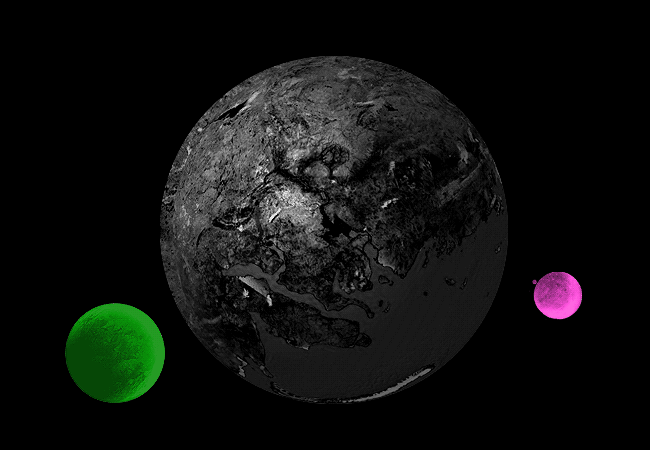
Act 5, Act 1: MOB1US DOUBL3 R34CH4ROUND
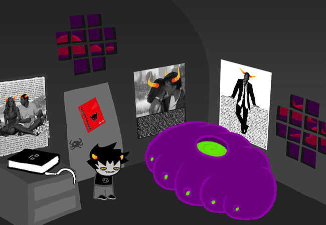
Meanwhile, on ALTERNIA: the trolls get their own story. We rewind to before their conversations with the kids and meet KARKAT VANTAS, better known as carcinoGeneticist (CG). It is his sixth wriggling day, roughly his thirteenth birthday.
Karkat likes terrible romantic comedies, writes terrible computer programs, and would very much like to be in charge. Tonight, he and his friends are going to play a game.
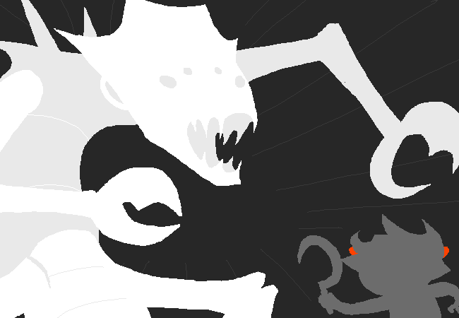
Alternian childhood comes with a LUSUS: a white monster that raises, protects, and occasionally needs to be protected by its young troll. Karkat’s guardian is CRABDAD. This is about as reassuring as parenting gets here.
Most adult trolls are off-world serving a conquering empire. Back home, blood color determines social rank in a brutal caste system. Growing up is already a survival exercise before anyone installs the game.
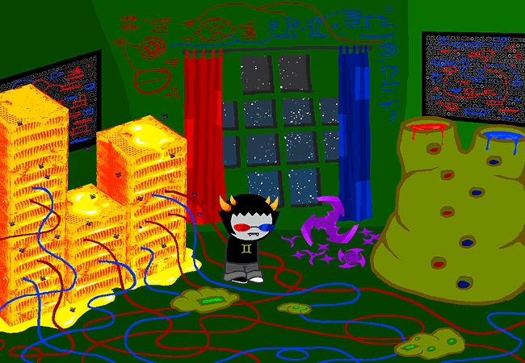
SOLLUX CAPTOR, twinArmageddons (TA), is a programmer and powerful psychic who hears the voices of people about to die. Using code recovered from ancient ruins, he develops SGRUB, the trolls’ version of Sburb.
Sollux believes the game offers a way to save their race. Twelve friends divide into RED and BLUE teams of six, expecting two separate sessions. They are wrong about several things already.
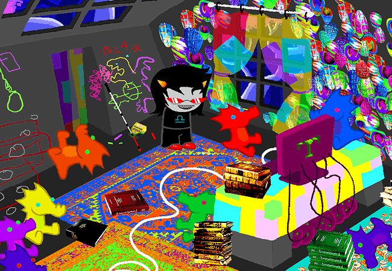
TEREZI PYROPE, gallowsCalibrator (GC), lives in a treehouse, practices courtroom justice with toy SCALEMATES, and navigates without sight by smelling and tasting her surroundings. Her guardian is a dragon that has not hatched yet.
She assembles the Red Team. Karkat promptly insists on becoming its leader. Their arguments are already doing most of the work of a friendship.
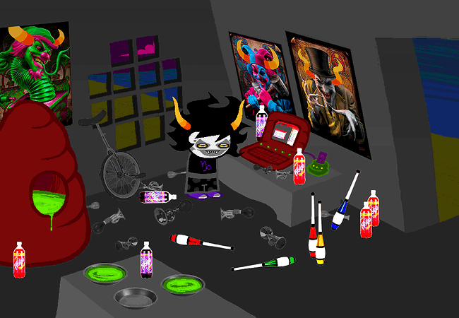
GAMZEE MAKARA, terminallyCapricious (TC), is an unusually relaxed member of the group. He loves clowns, FAYGO, and a religion built around miracles. His sea-goat lusus is not around much.
Gamzee also eats pies made from SOPOR SLIME, which trolls are supposed to sleep in. This does not improve his grasp of events. Nevertheless, he has a place on the Red Team.
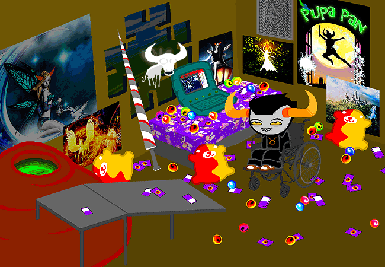
TAVROS NITRAM, adiosToreador (AT), loves fantasy adventures, awkward rap battles, and the idea of flying. His psychic ability lets him communicate with animals. His tiny winged bull lusus is TINKERBULL.
Tavros uses a wheelchair after a disastrous role-playing game. His trouble with Vriska is much more serious than the teasing their chat logs might suggest.
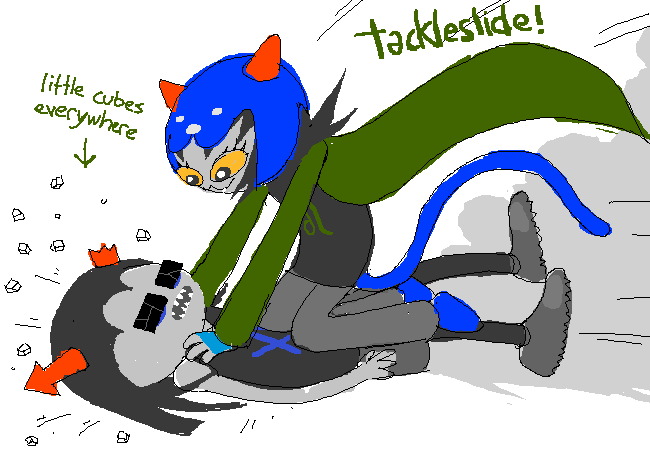
NEPETA LEIJON, arsenicCatnip (AC), hunts for food, role-plays as a cat, and maintains an elaborate shipping wall. Her closest friend is EQUIUS ZAHHAK, centaursTesticle (CT), a robot builder whose extraordinary strength makes ordinary objects difficult to keep intact.
Equius is obsessed with blood rank and insists Nepeta join the Blue Team with him. Their bond is MOIRALLEGIANCE: they look after one another and help keep each other in balance.
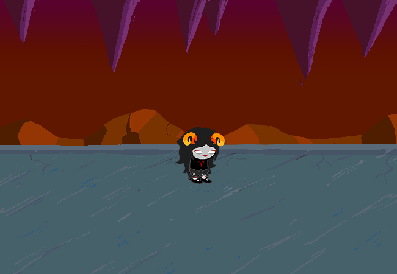
ARADIA MEGIDO, apocalypseArisen (AA), used to enjoy archaeology. Now she hears the dead, follows their instructions, and seems to have lost interest in nearly everything else.
She recovered the code that Sollux turned into Sgrub. Unlike him, she knows the game will bring about Alternia’s destruction. She pushes the plan forward anyway, treating catastrophe as something that has already happened.
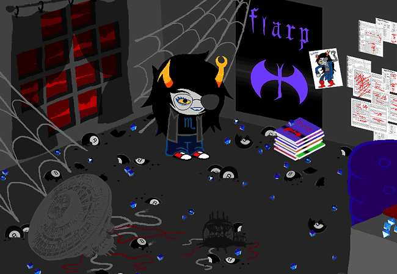
VRISKA SERKET, arachnidsGrip (AG), loves gambling, treasure, and winning. Her psychic powers let her control other trolls. Her enormous spider lusus demands a steady supply of victims, which Vriska provides through deadly games of FLARP.
She has already lost an eye and an arm by the time Sgrub begins. To understand why, we need the history of one particularly awful game.
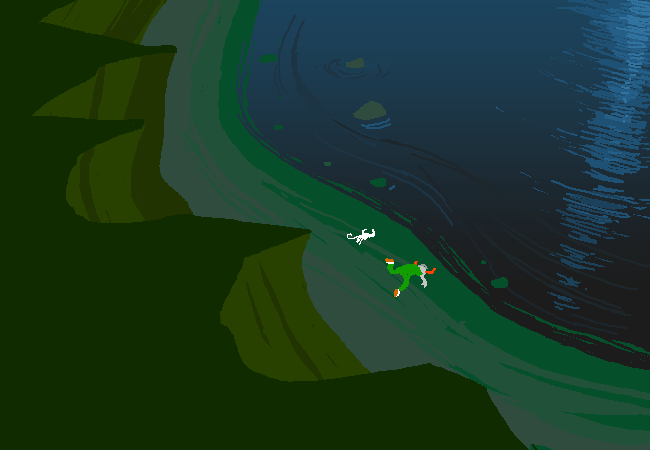
FLARP is an outdoor role-playing game, but its dangers are real. Tavros and Aradia play together against Vriska and Terezi. Vriska decides Tavros needs to stop being afraid and become the kind of adventurer she thinks he should be.
She takes control of his body and forces him off a cliff. The fall paralyzes him. What Vriska calls a lesson is an act of cruelty that will keep echoing through the group.
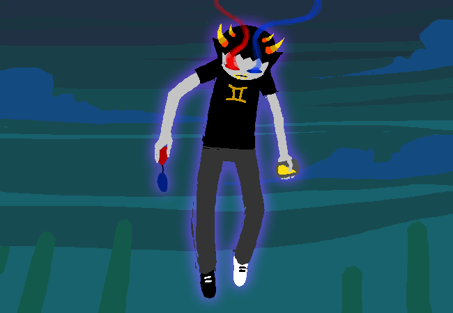
Aradia retaliates by sending the ghosts of Vriska’s victims to haunt her. Vriska responds by controlling Sollux and turning his destructive eye beams against Aradia.
The attack kills Aradia and her lusus. The detached girl who has been organizing their game is already a ghost. Sollux has been made an unwitting weapon against his friend.
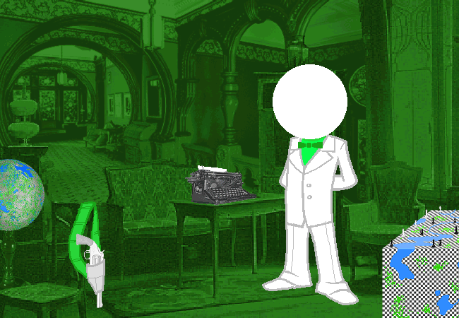
Terezi tells DOC SCRATCH that Vriska has one of his all-seeing cue balls. Scratch is Alternia’s FIRST GUARDIAN: an immensely powerful manipulator who serves someone called LORD ENGLISH.
He makes the cue ball explode in Vriska’s hand, destroying her left eye and arm. Equius supplies a robotic replacement arm. The score-settling has now injured or killed nearly everyone involved, and it is still not over.
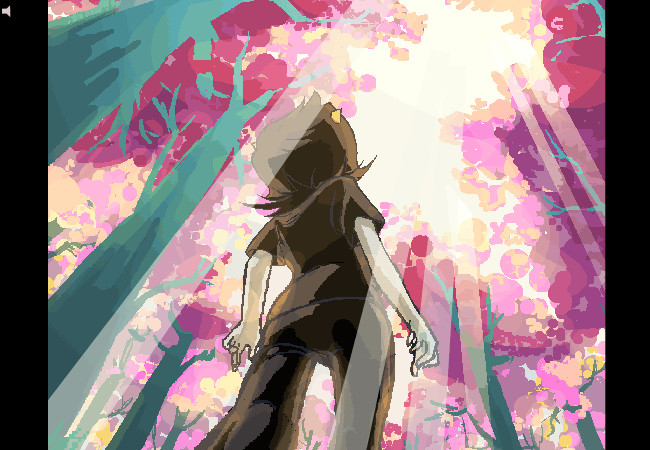
Vriska retaliates against Terezi through a chain of psychic control: she controls Tavros, uses his animal powers to reach the dragon, and makes Terezi sleepwalk outside.
Terezi opens her eyes to Alternia’s blazing sun and is blinded. The dragon helps her learn to perceive the world through her other senses. By the time the friends enter Sgrub, they are carrying all of this history with them.
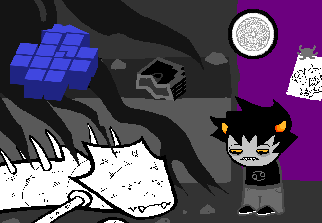
When Aradia admits what the game will do, Sollux tries to call everything off. Karkat refuses. In their ensuing argument, he runs Sollux’s forbidden MOBIUS DOUBLE REACHAROUND virus and unleashes a curse on the group.
The trolls’ lususes die in a series of accidents. Their bodies become sprite prototypes, allowing the guardians to accompany their charges into the Medium. Every pre-entry prototype also gives the enemy royalty another set of powers.
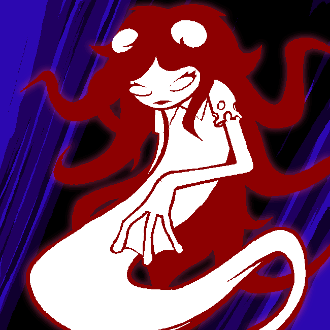
Aradia handles prototyping differently. She puts a FROG HEAD into her kernelsprite before entering, then merges with the sprite herself afterward.
As ARADIASPRITE, she becomes visible to friends who could not see her ghost. She is the MAID OF TIME, and her understanding of the session already extends far beyond everyone else’s.
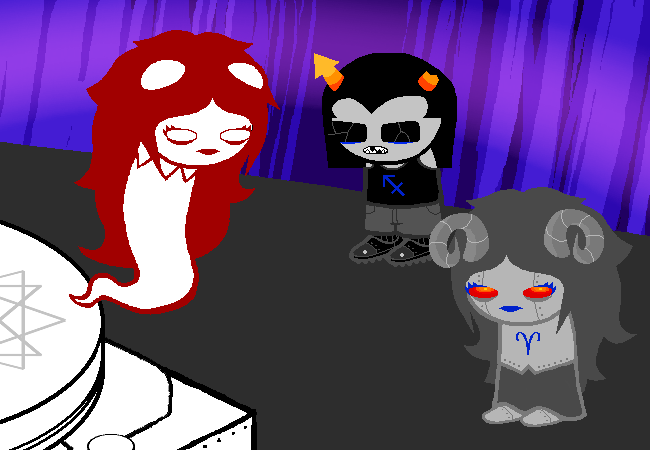
Equius builds Aradia a robotic body and brings it to her planet. She leaves the sprite behind and inhabits this SOULBOT, becoming ARADIABOT.
He has also programmed the body to feel affection for him. Aradia responds by ripping out and destroying its heart. Having a body again restores her ability to feel things, including anger. Equius does not get to choose those feelings for her.
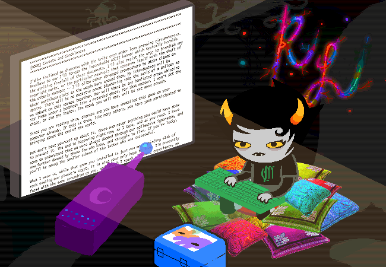
KANAYA MARYAM, grimAuxiliatrix (GA), loves fashion, carries a chainsaw, and dreams on PROSPIT. Visions in Skaia’s clouds lead her to Rose’s Sburb walkthrough.
Kanaya assumes its author must be an ancient, experienced player and admires her accordingly. She is actually reading instructions written by one of the human kids. The two groups’ stories are connected before either side understands how.
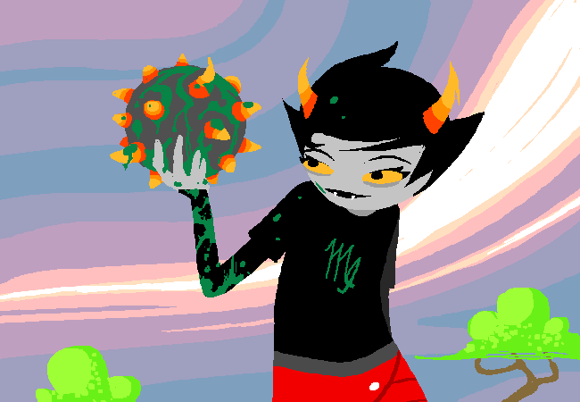
Kanaya’s lusus is a rare VIRGIN MOTHER GRUB. When it dies, Kanaya retrieves its MATRIORB, an egg capable of producing a new Mother Grub.
This gives the trolls a chance to rebuild their species after Alternia’s destruction. Kanaya keeps the orb locked safely in her inventory. Among all the weapons and grudges entering the Medium, someone is carrying a future.
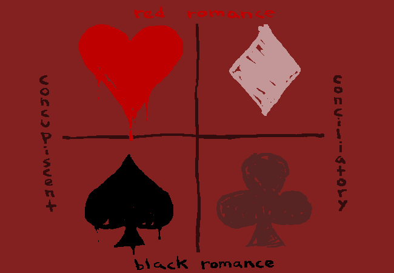
Troll romance has FOUR QUADRANTS. MATESPRITSHIP, marked by a heart, is romantic love. KISMESISSITUDE, marked by a spade, is an intense romantic rivalry. A MOIRAIL, marked by a diamond, is a partner who helps stabilize and protect you.
AUSPISTICISM, marked by a club, adds a third person who mediates a dangerous feud. These are distinct relationships, not four stages of dating. The trolls themselves are not always good at keeping them straight.
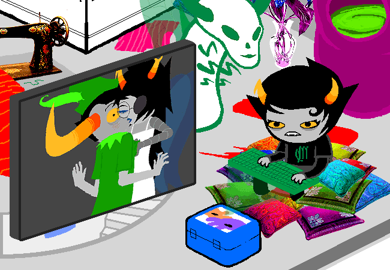
Kanaya has feelings for Vriska, but keeps finding herself managing Vriska’s conflicts instead. Vriska, meanwhile, pushes Tavros toward the adventurous, confident persona she wants him to have and makes unwanted romantic advances.
The quadrant system gives everyone more words for their relationships. It does not automatically make those relationships healthy, or turn Vriska’s treatment of Tavros into harmless flirting.
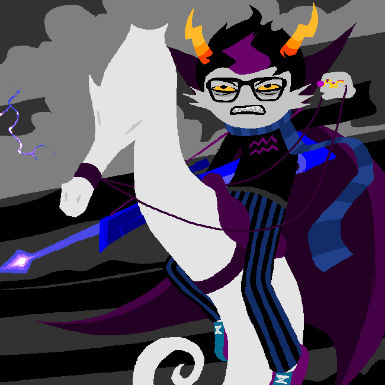
ERIDAN AMPORA, caligulasAquarium (CA), is a high-ranking seadweller with a powerful rifle, a taste for dramatic clothing, and plans to exterminate land-dwelling trolls.
He hunts enormous lususes to feed Feferi’s guardian. Feferi is his moirail, but he wants their relationship to become romantic. She has other ideas. His contempt for nearly everyone does not help his case.
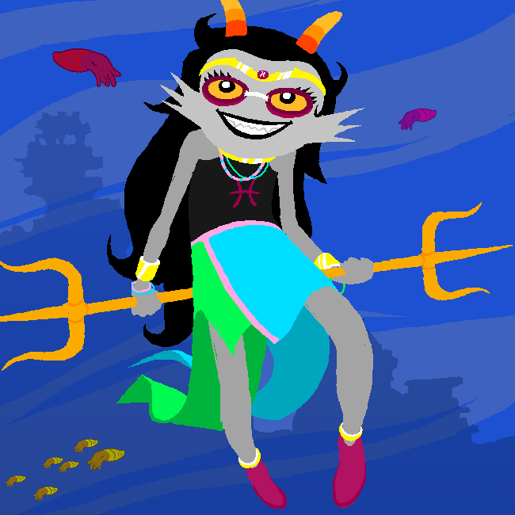
FEFERI PEIXES, cuttlefishCuller (CC), is the heir to the Alternian throne. She imagines a kinder empire, although her ideas about looking after people can still sound rather like keeping pets.
Her lusus is GL’BGOLYB, an immense sea monster whose protection keeps the current Empress from killing her. Keeping it fed and quiet is Feferi’s responsibility. The consequences of failing are much bigger than one hungry guardian.
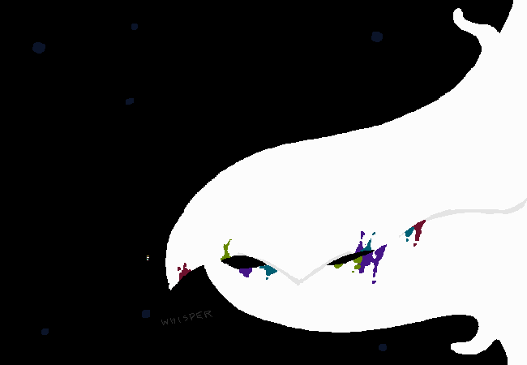
Gl’bgolyb’s voice can kill trolls. A whisper threatens the lowest blood castes; its full cry, the VAST GLUB, can wipe out trolls across the galaxy.
As the lusus dies during the entry catastrophe, that cry destroys the civilization the players leave behind. Sollux is caught by it too. Karkat cannot save him and finds yet another reason to blame himself.
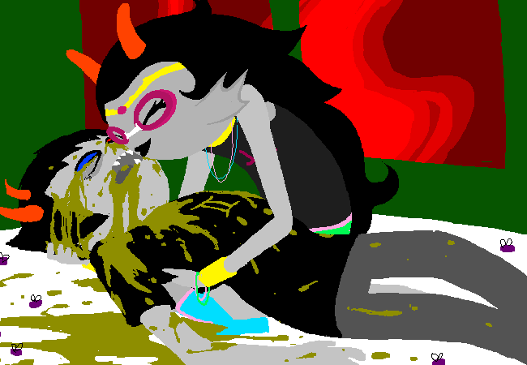
Feferi reaches Sollux and kisses him. His dreamself on DERSE wakes, giving him a way to continue after the death of his waking body.
She also ends her moirallegiance with Eridan. She is tired of treating his threats as a full-time responsibility, and she grows closer to Sollux instead. Eridan receives all of this badly.
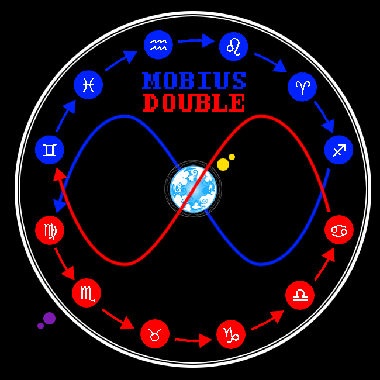
The Red and Blue Teams turn out to be sharing ONE SESSION. Their two chains of server connections are parts of the same twelve-player game, joined by the connections between Kanaya and Equius, and between Karkat and Sollux.
All twelve reach the Medium. Their competing leaders and team loyalties have mostly been an elaborate misunderstanding. The MOBIUS DOUBLE REACHAROUND is also the shape of the game they have built together.
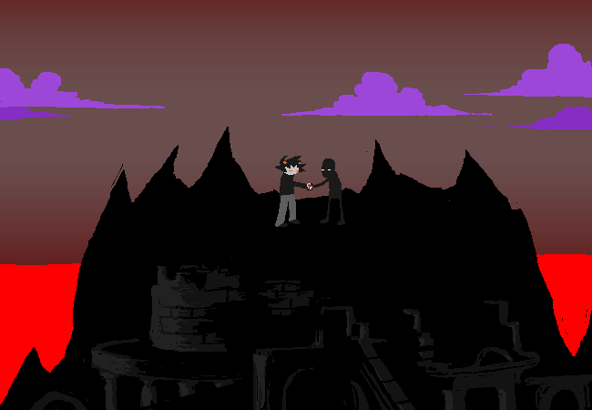
This session has its own JACK NOIR. After Jack draws his blood, Karkat’s secret is exposed: his blood is an abnormal candy red, outside the accepted caste colors.
Jack’s blood is red too. Instead of rejecting Karkat, he becomes an unlikely ally. Karkat helps him plot against the Black Queen, and Jack supplies information the players need for their REGISURP mission.
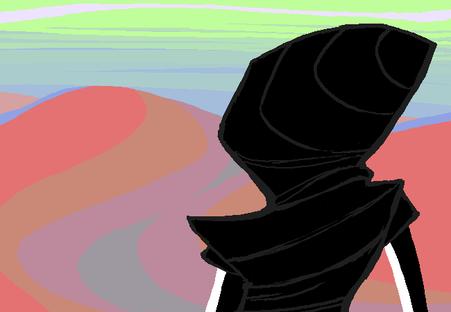
The Black Queen refuses the frog features her ring would give her and is driven into exile. She becomes SNOWMAN. Terezi also works toward destroying the ring and exiling Jack, despite Karkat’s attachment to his new friend.
That Jack becomes SPADES SLICK. The Midnight Crew’s story belongs to the future of the trolls’ ruined world. The Intermission was connected to this game all along.
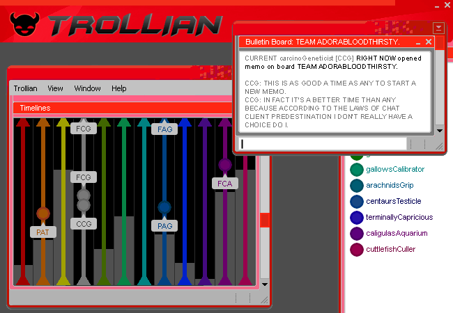
TROLLIAN lets the players open memos across time. Past and future versions of the same person can join a conversation, so Karkat frequently ends up banning or insulting himself.
The memos turn the roughly 600-hour session into a tangle of warnings, arguments, and foreknowledge. Knowing something is coming does not necessarily let anyone change it. Aradia is particularly clear about that.
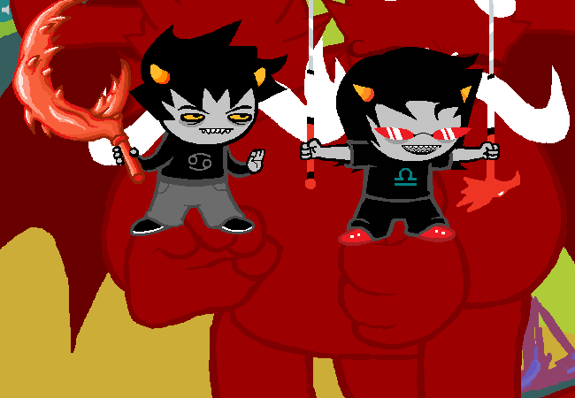
The friends explore their planets and fight enormous monsters. Karkat and Terezi make an effective team. Elsewhere, Eridan and Sollux duel.
Tavros receives robotic legs from Equius. Everyone gains equipment and experience, but the problems they brought from home remain.
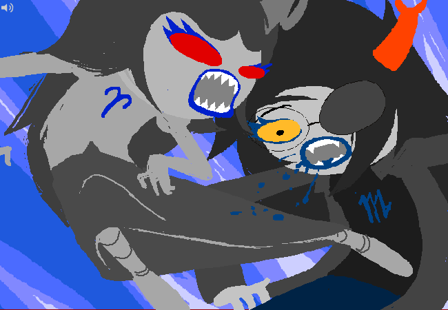
Aradia finally confronts Vriska over her murder and beats her nearly to death. Tavros witnesses the aftermath; Aradia leaves by traveling through time.
On Prospit, Terezi wakes Vriska’s dreamself. The old chain of retaliation has followed them into the game, and another apparent victory has left someone broken.
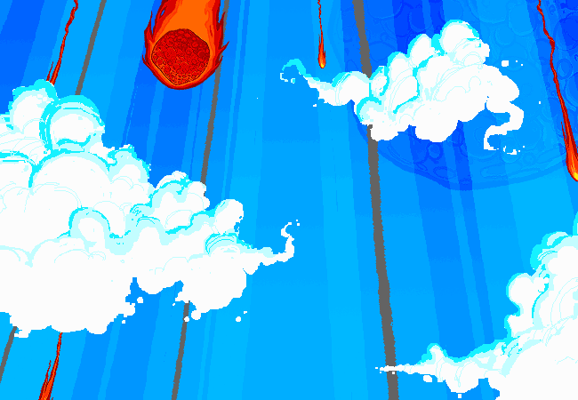
An army of Aradiabots arrives from DOOMED TIMELINES: alternate versions of the session that cannot survive. They gather for the final battle, knowing their own futures are already lost.
Aradia’s time powers make this army possible. Its purpose is to keep the main timeline moving toward victory, at the cost of all those other selves.
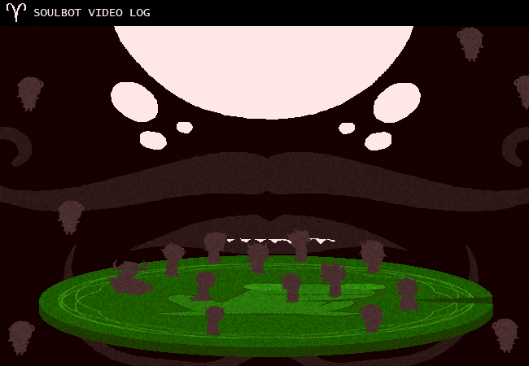
The BLACK KING carries the powers of twelve pre-entry prototypes, including Gl’bgolyb. Aradia’s army prevents his psychic attack from ending the fight immediately while the other players attack.
They turn his falling meteors against him. Vriska lands an extraordinarily lucky roll with her eight-sided dice. Together, they win—but only just.
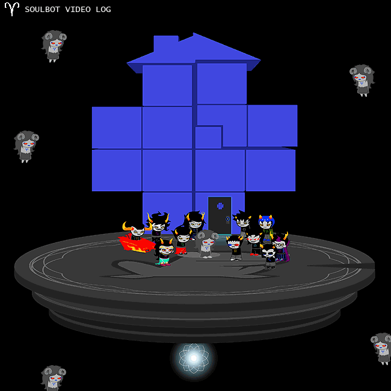
The King is dead. The Reckoning is over. After all their fighting, mistakes, and unlikely cooperation, the trolls have beaten Sgrub.
A door appears, offering the game’s ultimate reward. They gather in front of it, with the Aradiabots watching over them. For one brief moment, Karkat believes everything has worked out.
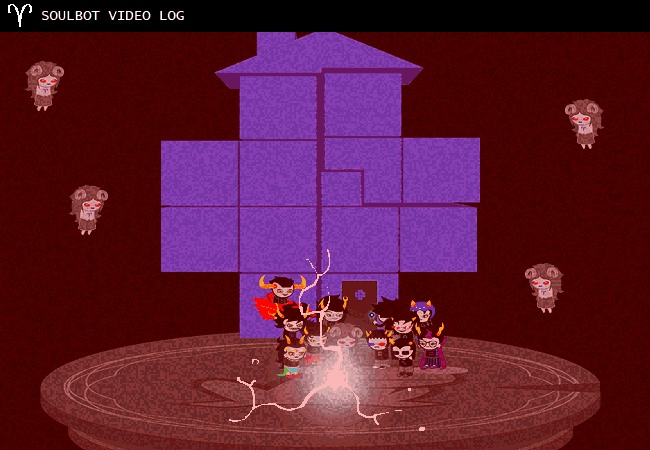
Before they can claim the reward, something breaks through. Aradia traces the disaster to a rift in paradox space associated with a SCRATCH in another session.
That other game belongs to four humans. A Scratch is a game mechanism, not inherently an attack, but the circumstances surrounding this one allow a terrible enemy to reach the trolls. They do not yet have the whole explanation.
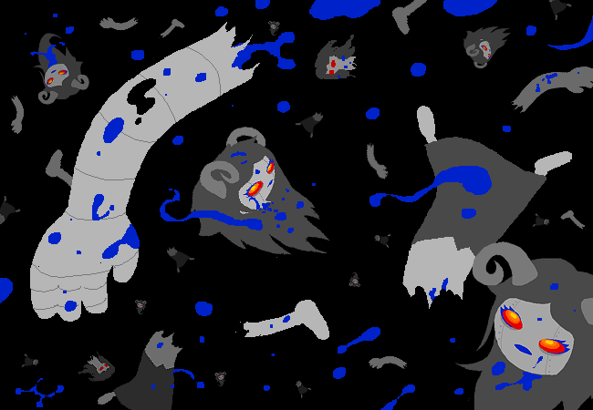
An apparently indestructible demon destroys the trolls’ chance to pass through the door. The Aradiabot army tries to hold it off, buying the others time to escape.
The army is annihilated. Winning the game has not made the players safe, and their reward is now out of reach.
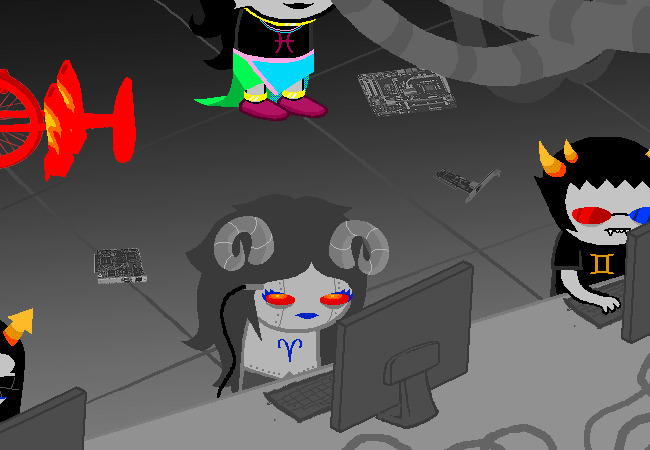
The twelve survivors retreat to a laboratory on a meteor in the VEIL—the place where they originally hatched. From there, they investigate the humans whose session they blame for the disaster.
This is where the trolling we have already seen comes from: frightened, furious winners stranded outside their prize, reaching across timelines to confront four kids who do not understand what they supposedly did.
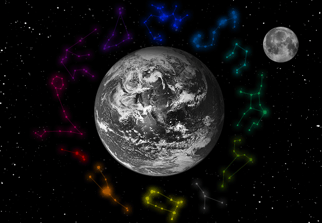
One final complication: the trolls’ game created a new universe. It is the universe containing Earth, John, Rose, Dave, and Jade.
The humans Karkat blames for ruining their victory exist because of that victory. The two stories are bound together before the first message is ever sent.
END OF ACT 5 ACT 1.